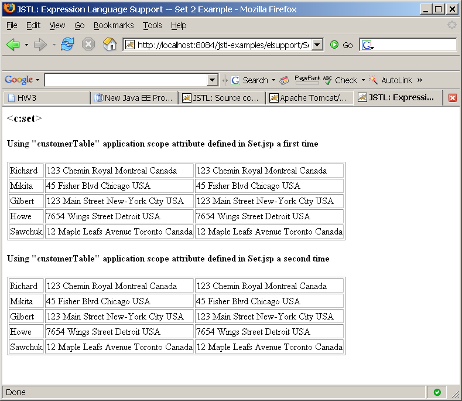
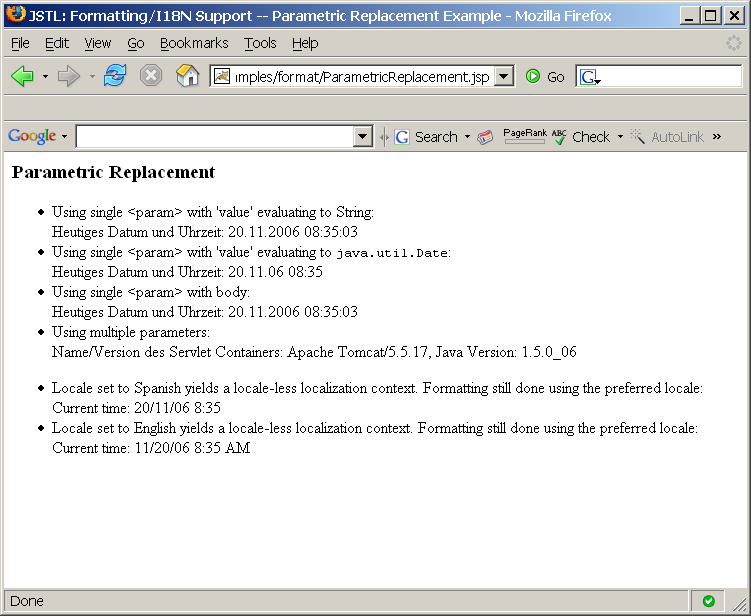

JSTL Examples
The JSTL is a standard set of tag libraries that are available on all
Java EE 1.4 and after compatible platforms. The JSTL includes
core tags, Internationalization and formatting tags, XML tags, and SQL
tags. In this hands-on lab, you are going to learn how to use
these tags in your web applications.
Expected duration: 180 minutes
(excluding homework)
Software Needed
Before you begin, you need to install the following software on your
computer.
- Java Standard Development Kit (JDK™) version 6.0 (download)
- Select JDK 6 Update x
from the download page
- NetBeans IDE 6.1 (download)
- Download either "Web &
Java EE" or "All"
bundles.
- 4015_jstlexamples.zip (download)
- The zip file contains this document and the lab contents
- Download it and unzip in a directory of your choice
OS platforms you can use
- Windows
- Solaris x86, Solaris Sparc
- Linux
- Mac OS X
Resources
Change Log
Lab Exercises
Exercise 1: "Core" JSTL tags
In this exercise, you are going to
experiment various "Core" JSTL tags such as <c:out>,
<c:set> <c:foreach>, <c:import>, <c:url>, and
so on..
(1.1)
Build and run "JSTL Example" sample application
0. Start NetBeans IDE.
1. Create a new NetBeans project from
the sample app that comes with NetBeans
- Select File->New Project (Ctrl+Shift+N).
- Obserbe the New Project
dialog box appears.
- Expand Samples.
- Select Web under Categories and JSTL Examples
under Projects. Click Next. (Figure-1.10 below)
Figure-1.10: Run JSTL Example sample application
- Observe that New Sample Web
Application dialog
box appears.
- Accept the default project name
and other values and click Finish.
- Observe that the JSTLExamples project
node appears.
2. Build and run the application
- Right click JSTLExamples project
node and select Run.
- Observe that the browser gets displayed. (Figure-1.11 below)

Figure-1.11: JSTL Example
return to top of
the exercise
(1.2)
<c:out>
In this step, you are going to display
customer information using
<c:set>
core tag.
Note: The
"customers"/"Customers"
name/object pair is created and saved as an attribute in the
ServletContext when the application is deployed. The code in
which this is initialized is Init.java under
JSTLExamples->Source
Packages->org.apache.taglibs.standard.examples.startup.
The
Customers is a collection
of
Customer object.
1. Click
General Purpose tags.
(Figure-1.20 below)
Figure-1.20: Select General Purpose Tags
2. Click execute icon of
<out>.
(Figure-1.21 below)
Figure-1.21: Try <c:out>
3. Observe the result. (Figure-1.22
below) Note that each
customer's last name, home phone number, and cell phone number
information is displayed.
Figure-1.22: Result of displaying customer information through
<c:out tag>
4. Click backward button of the browser to go back to the previous page.
5. Click source code link. (Figure-1.23 below) This is to display
the source code of the JSP page.
Figure-1.23: See the source code
6. Observe the source code of
./elsupport/Out.jsp.
(Figure-1.24
below)
Figure-1.24: Source code display of the ./elsupport/Out.jsp
Now let's see the /elsupport/Out.jsp from the NetBeans IDE. You
are going to modify it in the subsequent steps as an experiment.
7. In the NetBeans IDE, expand
elsupport
under
JSTLExamples->Web
Pages.
8. Double-click
Out.jsp to open
it
in the source editor window.
9. Modify
Out.jsp as shown in
Code-1.25 below. The code fragment
that needs to be added is highlighted in
bold and
blue-colored
font. The modification is to display customer's first name along
last name, home phone number, and cell phone number.
<%@ taglib prefix="c"
uri="http://java.sun.com/jsp/jstl/core" %>
<html>
<head>
<title>JSTL: Expression Language Support -- Expr
Example</title>
</head>
<body bgcolor="#FFFFFF">
<h3><c:out></h3>
<table border="1">
<c:forEach var="customer" items="${customers}">
<tr>
<td><c:out
value="${customer.lastName}"/></td>
<td><c:out
value="${customer.firstName}"/></td>
<td><c:out
value="${customer.phoneHome}" default="no home phone
specified"/></td>
<td>
<c:out
value="${customer.phoneCell}" escapeXml="false">
<font
color="red">no cell phone specified</font>
</c:out>
</td>
</tr>
</c:forEach>
</table>
<h4><c:out> with Reader object</h4>
<%
java.io.Reader reader1 = new java.io.StringReader("<foo>Text for
a Reader!</foo>");
pageContext.setAttribute("myReader1", reader1);
java.io.Reader reader2 = new java.io.StringReader("<foo>Text for
a Reader!</foo>");
pageContext.setAttribute("myReader2", reader2);
%>
Reader1 (escapeXml=true) : <c:out value="${myReader1}"/><br>
Reader2 (escapeXml=false): <c:out value="${myReader2}"
escapeXml="false"/><br>
</body>
</html>
|
Code-1.25: Modified Out.jsp
10. Right click
JSTLExamples
project
node and select
Run.
11. Click
General Purpose tags.
12. Click execute icon of
<out>.
13. Observe that customer's first names are also displayed.
(Figure-1.21 above)
Figure-1.26: Customer's first name is also displayed
14. For your own exercise, display the customer's
birthDate as well by modifying the
Out.jsp.
return to top of
the exercise
(1.3)
<c:set>
In this step, you are going to use <c:set> and <c:out> core tags to display
customer information in a different format. You will see how <c:set> is used to create an
attribute (of an application scope) in Set.jsp.
This
application scope attribute is then used in a second JSP page, Set2.jsp.
1. Click General Purpose tags.
2. Click execute icon of <set>.
(Figure-1.31 below)
Figure-1.31: Click <set>
3. At this point, an application scope attribute "
customerTable" is set.
4. Click "execute" button beside
Using
customerTable in another JSP page. (Figure-1.32 below)
Figure-1.32: Display customer information using customerTable attribute
5. Observe the display of the customer information (Figure-1.33 below)

Figure-1.33: Customer information is displayed twice
Now let's see how this is done.
6. Double-click
/elsupport/Set.jsp
to open it in the source editor. (Code-1.34 below) Observe that
the code fragment in bold and blue-colored font is set to
customerTable attribute in the
application scope. This
customerTable attrubute is
then used in
/elsupport/Set2.jsp.
<%@ taglib prefix="c"
uri="http://java.sun.com/jsp/jstl/core" %>
<html>
<head>
<title>JSTL:
Expression Language Support -- Set Example</title>
</head>
<body bgcolor="#FFFFFF">
<h3><c:set></h3>
<h4>Setting
application scope attribute "customerTable"</h4>
<c:set var="customerTable"
scope="application">
<table border="1">
<c:forEach var="customer" items="${customers}">
<tr>
<td>${customer.lastName}</td>
<td><c:out value="${customer.address}" default="no address
specified"/></td>
<td>
<c:out value="${customer.address}">
<font color="red">no address specified</font>
</c:out>
</td>
</tr>
</c:forEach>
</table>
</c:set>
<p>
Using customerTable in
another JSP page
<a
href="../ShowSource.jsp?filename=/elsupport/Set2.jsp"><img
src="../images/code.gif" width="24" height="24"
border="0"></a>
<a
href="../elsupport/Set2.jsp"><img src="../images/execute.gif"
width="24" height="24" border="0"></a>
</body>
</html>
|
Code-1.34: /elsupport/Set.jsp
7. Double-click
/elsupport/Set2.jsp
to open it in the source editor. (Code-1.35 below)
<%@ taglib prefix="c"
uri="http://java.sun.com/jsp/jstl/core" %>
<html>
<head>
<title>JSTL:
Expression Language Support -- Set 2 Example</title>
</head>
<body bgcolor="#FFFFFF">
<h3><c:set></h3>
<h4>Using
"customerTable" application scope attribute defined in Set.jsp a first
time</h4>
<c:out value="${customerTable}"
escapeXml="false"/>
<h4>Using
"customerTable" application scope attribute defined in Set.jsp a second
time</h4>
<c:out value="${customerTable}"
escapeXml="false" />
</body>
</html>
|
Code-1.35: /elsupport/Set2.jsp
8. Modify
/elsupport/Set.jsp as
shown in Code-1.36 below. The modification is to display the
birthday data of the customers along with address.
<%@ taglib prefix="c"
uri="http://java.sun.com/jsp/jstl/core" %>
<html>
<head>
<title>JSTL:
Expression Language Support -- Set Example</title>
</head>
<body bgcolor="#FFFFFF">
<h3><c:set></h3>
<h4>Setting
application scope attribute "customerTable"</h4>
<c:set
var="customerTable" scope="application">
<table border="1">
<c:forEach var="customer" items="${customers}">
<tr>
<td>${customer.lastName}</td>
<td><c:out value="${customer.address}" default="no address
specified"/></td>
<td><c:out value="${customer.birthDate}" default="no birth
date specified"/></td>
<td>
<c:out value="${customer.address}">
<font color="red">no address specified</font>
</c:out>
</td>
</tr>
</c:forEach>
</table>
</c:set>
<p>
Using customerTable in
another JSP page
<a
href="../ShowSource.jsp?filename=/elsupport/Set2.jsp"><img
src="../images/code.gif" width="24" height="24"
border="0"></a>
<a
href="../elsupport/Set2.jsp"><img src="../images/execute.gif"
width="24" height="24" border="0"></a>
</body>
</html>
|
Code-1.36: Modified Setp.jsp
9. Right click
JSTLExamples
project
node and select
Run.
10. Click
General Purpose tags.
11. Click execute icon of
<set>.
(Figure-1.31 above)
12. Click "execute" button beside
Using
customerTable in another JSP page. (Figure-1.32 above)
13. Observe that the birthday information is now displayed.
(Figure-1.37 below)
Figure-1.37: Birthday information is now displayed
return to top of
the exercise
(1.4)
Conditional Tags
In this step, you are going to try the
following conditional tags on your own.
- <c: if ..>
- <c:choose> along
with <c:when> and <c:otherwise>
1. Select
Conditional Tags
link from the starting page of the browser.
2. Try
<if> Simple Conditional
Execution - do the execution and then take a look at the source
code.
3. Try
<choose> Mutually
Exclusive Conditional Execution
return to top of
the exercise
(1.5)
Iterator Tags
In this step, you are going to try the following iterator tags on your
own.
- <c:forEach var="..."
items="...">
- <c:forTokens var="..."
items="...">
1. Select
Iterator Tags link
2. Try
Simple
3. Try
Range
4. Try
Data Types
5. Try
Iteration Status
6. Try
<forTokens>
return to top of
the exercise
(1.6)
Import Tags, <c:import>
In this step, you are going to try the following import tags.
1. Select
Import Tags Examples
2.
Modify
Absolute.jsp as shown in Code-1.61
below.
<%@ taglib prefix="c"
uri="http://java.sun.com/jsp/jstl/core" %>
<%@ taglib prefix="ex" uri="/jstl-examples-taglib" %>
<html>
<head>
<title>JSTL: I/O
Support -- Absolute URL Example</title>
</head>
<body bgcolor="#FFFFFF">
<h3>Absolute
URL</h3>
<h4>CNN's RSS XML
feed:</h4>
<blockquote>
<ex:escapeHtml>
<c:import
url="http://www.cnn.com/"/>
</ex:escapeHtml>
</blockquote>
</body>
</html>
|
Code-1.61: Modified Absolute.jsp
3. Click execute link of
Absolute.
4. Observe that contents of the HTML document pointed by the link is
retrieved and displayed. (Figure-1.62 below)
Figure-1.62: Contents of HTML document is retrieved and displayed
5. Click backward button of the browser.
6. Click execute link of the
Absolute
(FTP).
7. Observe that the contents of the FTP document pointed by the FTP
link is retrieved and displayed. (Figure-1.63 below)
Figure-1.63: Contents of FTP document is retrieved and displayed
return to top of
the exercise
(1.7)
Encode tags, <c:url>
In this step, you are going to try the following encode tags.
1. Select Import Tags.
2. Select execute link of the Encode.
3. Observe the result. (Figure-1.70 below) This is the case where
Cookie is used for transporting session id's. In the subsequent
step, you are going to disable Cookies to see how URL rewriting works.
Figure-1.70: URL encoding (when Cookie is enabled)
4. Now you are going to disable Cookies. The steps shown here is
for disabling Cookies for Firefox browser. Select Tools from the top-level menu and
then select Options.
(Figure-1.71 below)
Figure-1.71: Select Options
5. Select Privacy and select Cookies tab.
6. Uncheck Allow sites to set Cookies.
(Figure-1.72 below)
Figure-1.72: Disable Cookies
7. Try excute link of the URL Encoding and observe that URL rewriting
is now used.
Figure-1.73: URL Rewriting is used for transporting session id's when
Cookies is disabled
8. Enable Cookies again
Summary
In this exercise, you have tried
various core tags such <c:out>, <c:set>, <c:foreach>,
<c:import>, <c:url> etc.
return to the top
Exercise 2: "I18N (Internationalization)
& Formatting
Tags"
In this exercise, you are going to learn
how to use "I18N and Formatting" tags.
(2.1)
Resource bundle
0. Build and run the
JSTLExamples project as you did in
step 1.1 above.
1. Click execute link of the
Demo
in the browser. (Figure-2.10 below)
Figure-2.10: Excute Demo
2. Observe key/String-value pairs of the default language is
displayed.
(Figure-2.11 below)
Figure-2.11: Key/value pairs of the default language are displayed
3. Click
French from the
Set application-based locale.
(Figure-2.12 below)
4. Observe that key-value pairs are now in French.
Figure-2.12: Key-value pairs in French
Now let's understand what is happening. We will take a look at
the
Demo.jsp which reflects
the Figure-2.11 and Figure-2.12 above and Java source code in which
key/value pairs of localized strings are set.
4. Double-click
Demo.jsp under
JSTLExamples->Web Pages->format
to open it in the source editor. (Code-2.13 below) Please pay
attention to the bold fonted code fragment below.
<%@ page
import="javax.servlet.jsp.jstl.core.Config, java.util.*" %>
<%@ taglib prefix="c" uri="http://java.sun.com/jsp/jstl/core" %>
<%@ taglib prefix="fmt" uri="http://java.sun.com/jsp/jstl/fmt" %>
<html>
<head>
<title>JSTL: Formatting/I18N Support -- Demo
Example</title>
</head>
<body bgcolor="#FFFFFF">
<h3>Demo</h3>
<p>
The following bundles exist in the web application: 'Resources',
'Resources_de', 'Resources_fr', 'Resources_it'.
'Resources' is the 'base' bundle and contains all messages in English.
The italian bundle only holds one message
(key=greetingMorning).
</p>
<c:if test="${!empty
param.locale}">
<fmt:setLocale
value="${param.locale}" scope="page"/>
</c:if>
<c:if test="${!empty
param.fallback}">
<% Config.set(request,
Config.FMT_FALLBACK_LOCALE,
request.getParameter("fallback")); %>
</c:if>
<table>
<tr>
<td><b>Set application-based
locale:</b></td>
<td>
<a
href='?locale=fr&fallback=<c:out
value="${param.fallback}"/>'>French</a> •
<a href='?locale=de&fallback=<c:out
value="${param.fallback}"/>'>German</a> •
<a href='?locale=it&fallback=<c:out
value="${param.fallback}"/>'>Italian</a> •
<a href='?locale=es&fallback=<c:out
value="${param.fallback}"/>'>Spanish (no bundle)</a>
•
<a href='?locale=&fallback=<c:out
value="${param.fallback}"/>'>None</a>
</td>
</tr>
<tr>
<td align="right"><b>Set fallback
locale:</b></td>
<td>
<a href='?locale=<c:out
value="${param.locale}"/>&fallback=fr'>French</a>
•
<a href='?locale=<c:out
value="${param.locale}"/>&fallback=de'>German</a>
•
<a href='?locale=<c:out
value="${param.locale}"/>&fallback=it'>Italian</a>
•
<a href='?locale=<c:out
value="${param.locale}"/>&fallback=es'>Spanish (no
bundle)</a> •
<a href='?locale=<c:out
value="${param.locale}"/>&fallback='>None</a>
</td>
</table>
<p>
Request parameter "locale": <c:out
value="${param.locale}"/><br>
<i>(This value is used to set the application based locale for
this example)</i>
<p>
Application based locale: <%=Config.find(pageContext,
Config.FMT_LOCALE)%><br>
<i>(javax.servlet.jsp.jstl.fmt.locale configuration
setting)</i>
<p>
Browser-Based locales:
<%
Enumeration e = request.getLocales();
while (e.hasMoreElements()) {
Locale locale = (Locale)e.nextElement();
out.print(locale);
out.print(" ");
}
%>
<br>
<i>(ServletRequest.getLocales() on the incoming request)</i>
<p>
Fallback locale: <%=Config.find(pageContext,
Config.FMT_FALLBACK_LOCALE)%><br>
<i>(javax.servlet.jsp.jstl.fmt.fallbackLocale configuration
setting)</i>
<p>
<jsp:useBean id="now" class="java.util.Date" />
<h4>
<fmt:formatDate value="${now}" dateStyle="full"/> •
<fmt:formatDate value="${now}" type="time"/>
</h4>
<p>
<fmt:bundle
basename="org.apache.taglibs.standard.examples.i18n.Resources">
<table cellpadding="5" border="1">
<tr>
<th align="left">KEY</th>
<th align="left">VALUE</th>
</tr>
<tr>
<td>greetingMorning</td>
<td><fmt:message
key="greetingMorning"/></td>
</tr>
<tr>
<td>greetingEvening</td>
<td><fmt:message
key="greetingEvening"/></td>
</tr>
<tr>
<td>currentTime</td>
<td>
<fmt:message key="currentTime">
<fmt:param
value="${now}"/>
</fmt:message>
</td>
</tr>
<tr>
<td>serverInfo</td>
<td><fmt:message
key="serverInfo"/></td>
</tr>
<tr>
<td>undefinedKey</td>
<td><fmt:message
key="undefinedKey"/></td>
</tr>
</table>
</fmt:bundle>
<p>
</body>
</html>
|
Code-2.13: Demo.jsp
5. Expand
JSTLExamples->Source
Packages->org.apache.taglibs.standard.examples.i18n.
6. Observe that there are several Java files that captures key/value
pairs for default language (English in this case) and several locales.
(Figure-2.14 below)
Figure-2.14: Resources files
6. Double-click
Resourcs.java
to open it in the source editor.
This file maintains the key/value pairs of the default language - in
this example, English. (Code-2.15 below)
package
org.apache.taglibs.standard.examples.i18n;
import java.util.*;
public class Resources extends ListResourceBundle {
private static Object[][] contents;
static {
contents = new Object[][] {
{ "greetingMorning", "Good
Morning!" },
{ "greetingEvening", "Good
Evening!" },
{ "serverInfo", "Name/Version of
Servlet Container: {0}, "
+ "Java Version: {1}" },
{ "currentTime", "Current time:
{0}" },
{ "com.acme.labels.cancel",
"Cancel" },
{
"java.lang.ArithmeticException", "division by 0" }
};
}
public Object[][] getContents() {
return contents;
}
}
|
Code-2.x: Resources.java
7. Double-click
Resourcs_fr.java
to open it in the source editor.
This file maintains the key/value pairs of the French. (Code-2.15 below)
package
org.apache.taglibs.standard.examples.i18n;
import java.util.*;
public class Resources_fr extends ListResourceBundle {
private static Object[][] contents;
static {
contents = new Object[][] {
{ "greetingMorning", "Bonjour!!"
},
{ "greetingEvening", "Bonsoir!" },
{ "serverInfo", "Nom/Version du
Servlet Container: {0}, "
+ "Version Java: {1}" },
{ "currentTime", "Nous sommes le:
{0}" },
{ "com.acme.labels.cancel",
"Annuler" },
{
"java.lang.ArithmeticException", "division par 0" }
};
}
public Object[][] getContents() {
return contents;
}
}
|
Code-2.15: Resources_fr.java
return to top of
the exercise
(2.2)
Parameter replacement examples
1. Click execute link of the
Parameter
Replacement in the browser.
2. Observe the result. Note that page that is displayed is
ParametricReplacement.jsp.
(Figure-2.20 below)

Figure-2.20: Parametric replacement
3. In the NetBeans, double click
ParametricReplacement.jsp
under
JSTLExamples->Web
Pages->format to open it in the source editor.
4. Modify it as shown in Code-2.21 below.
<%@ taglib prefix="c"
uri="http://java.sun.com/jsp/jstl/core" %>
<%@ taglib prefix="fmt" uri="http://java.sun.com/jsp/jstl/fmt" %>
<html>
<head>
<title>JSTL: Formatting/I18N Support -- Parametric
Replacement Example</title>
</head>
<body bgcolor="#FFFFFF">
<h3>Parametric Replacement</h3>
<jsp:useBean id="now" class="java.util.Date" />
<fmt:setLocale value="de"/>
<fmt:setBundle
basename="org.apache.taglibs.standard.examples.i18n.Resources"
var="deBundle"/>
<fmt:formatDate value="${now}" type="both"
var="currentDateString"/>
<fmt:parseDate value="${currentDateString}" type="both"
var="currentDate"/>
<ul>
<li> Using single <param> with 'value'
evaluating to String:<br>
<fmt:message key="currentTime" bundle="${deBundle}">
<fmt:param value="${currentDateString}"/>
</fmt:message>
<li> Using single <param> with 'value'
evaluating to <tt>java.util.Date</tt>:<br>
<fmt:message key="currentTime" bundle="${deBundle}">
<fmt:param value="${currentDate}"/>
</fmt:message>
<li> Using single <param> with body:<br>
<fmt:message key="currentTime" bundle="${deBundle}">
<fmt:param>
<fmt:formatDate value="${now}" type="both"/>
</fmt:param>
</fmt:message>
<li> Using multiple parameters:<br>
<fmt:message key="serverInfo" bundle="${deBundle}">
<c:forEach var="arg" items="${serverInfoArgs}">
<fmt:param value="${arg}"/>
</c:forEach>
</fmt:message>
</ul>
<ul>
<fmt:setLocale value="es"/>
<fmt:setBundle
basename="org.apache.taglibs.standard.examples.i18n.Resources"
var="esBundle"/>
<li>Locale set to Spanish yields a locale-less localization
context. Formatting still done
using the preferred locale:<br>
<fmt:message key="currentTime" bundle="${esBundle}">
<fmt:param value="${currentDate}"/>
</fmt:message>
</li>
<fmt:setLocale value="en"/>
<fmt:setBundle
basename="org.apache.taglibs.standard.examples.i18n.Resources"
var="enBundle"/>
<li>Locale set to English yields a locale-less localization
context. Formatting still done
using the preferred locale:<br>
<fmt:message key="currentTime" bundle="${esBundle}">
<fmt:param value="${currentDate}"/>
</fmt:message>
</li>
</ul>
</body>
</html>
|
Code-2.21: ParametricReplacement.jsp
return to top of
the exercise
(2.3)
Formatting dates and times using browser-based locales
1. Click execute link ofthe 2nd
Date.
(Figure-2.30 below)
Figure-2.30: Date
2. Observe the result. (Figure-2.31 below)
Figure-2.31: Result of executing Date, which shows Formatting dates and
times using browser-based locale
3. Observe the locale that is sent from the browser
- Open HTTP Monitor window
- Choose GET FormatDataTime.jsp
on the left
- Select Client and
Server tab
- Observe that the Locale(s) is whatever locale you set in your
browser, in this example it is set to en-us.
(Figure-2.32 below)
Figure-2.32: Observe the local that is sent by the browser
Now we are going to change the language preference of the browser to
Korean (or whatever language of your choice) and see how the
FormatDateTimeBrowserLocale.jsp
gets displayed.
4. Change language preference (locale) of your browser. (The
example below assumes you are using Firefox browser.)
Note: If you are not using Firefox as your browser, please see
this
link for the information on how to change language preference on
your browser.
- Select Tools from
the top-level menu and select Options.
(Figure-2.32 below)
Figure-2.32: Select Options of Firefox browser
- Select Advanced.
- Click Edit Language... button
(Figure-2.33 below)
Figure-2.33: Select Advanced and Edit Languages
- Select a language of your choice (Korean/South Korea [ko-kr] in
this example) from the drop-down menu.
- Click Add button.
(Figure-2.34 below)
Figure-2.34: Add a language of your choice
- Click Move Up so that the language you chose is on the top
(Figure-2.35 below)
Figure-2.35: Move it to the top
- Click OK of the Options
dialog box to close it.
5. Click execute link ofthe 2nd
Date
and see the result. (Figure-2.36 below)
Figure-2.36: The Korean is set as a language of preference
6. Observe that the browser now sends
ko-kr
as a locale. (Figure-2.37 below)
Figure-2.37: Ko-kr is now set as a locale
return to top of
the exercise
Summary
In this exercise, you have exercised the
internationalization and formatting tags.
return
to the top
Exercise 3: SQL tags
In this exercise, you are going to use
Java DB database server that comes with GlassFish.
(3.1)
Setting up session attributes for SQL tag examples
1. In the NetBeans, right click
JSTLExamples project node and
select
Run.
2. Observe that Browser gets displayed. Select
SQL Tags under
Examples.
Figure-3.10: Select SQL Tags
3. Observe that
SQL Tags Examples
page gets displayed. (Figure-3.11 below)
4. Make sure the
Driver field
is set as
org.apache.derby.jdbc.ClientDriver.
5. Make sure the
URL field is
set as
jdbc:derby://localhost:1527/sample;create=true.
6. Enter
app and app
in the
User Name
and
Password fields.
7. Click
Submit button.
Figure-3.11: Set the Driver and URL for the Derby database
8. Observe that
DataBase Tags Examples
page gets displayed.
9. (In the NetBeans IDE) Double click
index.jsp
under
JSTLExamples->Web
Pages->sql to open it in the source editor.
10. Observe that when you click
Submit
button, it will be sent to
session.jsp.
Figure-3.12: index.jsp
11. Double click
session.jsp
under
JSTLExamples->Web
Pages->sql to open it in the source editor.
12. Observe that the
session.jsp
is basically setting up several attributes in the session scope.
These attributes will be used by the other jsp pages later.
<%@ taglib prefix="c"
uri="http://java.sun.com/jsp/jstl/core" %>
<html>
<head>
<title>Jakarta DBTAGS Taglib Example</title>
</head>
<body bgcolor="white">
<c:set var="myDbUrl" value="${param.dbUrl}" scope="session"/>
<c:set var="myDbDriver" value="${param.dbDriver}"
scope="session"/>
<c:set var="myDbUserName" value="${param.dbUserName}"
scope="session"/>
<c:set var="myDbPassword" value="${param.dbPassword}"
scope="session"/>
<%@ include file="links.html" %>
</body>
</html>
|
Code-3.13: session.jsp
return to top of
the exercise
(3.2)
Query update
1. Click execute link of the
Query
Iterate. It is an example of showing how to iterate over
the result of a query. (Figure-3.14 below)

Figure-3.14: DataBase Tags Examples page
2. Observe the result. Note that the JSP page that gets displayed is
./sql/QueryIterate.jsp.
(Figure-3.15 below)
Figure-3.15: Result of SQL Query execution
3. Double click
QueryIterate.jsp under
JSTLExamples->Web Pages->sql to
open it in the source editor.
4. Study the
QueryIterate.jsp
especially paying attention to the bold-fonted comments and
headers. (Figure-3.16 below) Some of these comments are not in
the actual code and only added here in order to aid your understanding.
<%@ taglib prefix="sql"
uri="http://java.sun.com/jsp/jstl/sql" %>
<%@ taglib prefix="c" uri="http://java.sun.com/jsp/jstl/core" %>
<html>
<head>
<title>JSTL: SQL action examples</title>
</head>
<body bgcolor="#FFFFFF">
<h1>SQL Query Execution using an iterator</h1>
<!-- NOTE: the sql:setDataSource tag is for prototyping and simple
applications. You should really use a DataSource object instead --!>
<sql:setDataSource
var="example"
driver="${sessionScope.myDbDriver}"
url="${sessionScope.myDbUrl}"
user="${sessionScope.myDbUserName}"
password="${sessionScope.myDbPassword}"
/>
<sql:transaction dataSource="${example}">
<!-- Create a table called
mytable --!>
<sql:update var="newTable">
create table mytable (
nameid int primary key,
name varchar(80)
)
</sql:update>
<!-- Add 3 new rows
to the mytable --!>
<sql:update var="updateCount">
INSERT INTO mytable VALUES (1,'Paul Oakenfold')
</sql:update>
<sql:update var="updateCount">
INSERT INTO mytable VALUES (2,'Timo Maas')
</sql:update>
<sql:update var="updateCount">
INSERT INTO mytable VALUES (3,'Paul van Dyk')
</sql:update>
<!-- Perform a query --!>
<sql:query var="deejays">
SELECT * FROM mytable
</sql:query>
</sql:transaction>
<hr>
<h2>Iterating over each
Row of the result</h2>
<table border="1">
<c:forEach var="row" items="${deejays.rowsByIndex}">
<tr>
<c:forEach var="column"
items="${row}">
<td><c:out
value="${column}"/></td>
</c:forEach>
</tr>
</c:forEach>
</table>
<hr>
<h2>Iterating over Columns
without knowing the index</h2>
<table border="1">
<c:forEach var="row" items="${deejays.rows}">
<tr>
<td>Name: <c:out
value="${row.NAMEID}"/></td>
<td>Value: <c:out
value="${row.NAME}"/></td>
</tr>
</c:forEach>
</table>
<hr>
<h2>Putting it all together</h2>
<%-- Easiest example showing
how to populate a table --%>
<table border="1">
<tr>
<%-- Get the column names for the header of the table --%>
<c:forEach var="columnName" items="${deejays.columnNames}">
<th><c:out
value="${columnName}"/></th>
</c:forEach>
<%-- Get the value of each column while iterating over rows
--%>
<c:forEach var="row" items="${deejays.rowsByIndex}">
<tr>
<c:forEach var="column"
items="${row}">
<td><c:out
value="${column}"/></td>
</c:forEach>
</c:forEach>
</table>
<sql:update var="newTable" dataSource="${example}">
drop table mytable
</sql:update>
</body>
</html>
|
Code-3.16: QueryIterate.jsp
return to top of
the exercise
(3.3)
Update
In this step, you are going to learn
how to insert and delete rows from a database table using SQL tags.
1. Click execute link of the Update.
It is an example of showing database updates.
2. Observe the result. Note that the JSP page that gets displayed is ./sql/Update.jsp.
(Figure-3.30 below)
Figure-3.30: SQL Upate Execution
Trouble-shooting:
If experience "
... invalid driver
class name: "java.lang.ClassNotFoundException: " as shown below
in Figure-3.31 below, it is because the database driver related session
attributes were not set as described in step 3.1 above.
Solution: Do the step 3.1
above again.
Figure-3.31: Exception you get when you do not set driver related
session attributes
3. Double click
Update.jsp under
JSTLExamples->Web Pages->sql to
open it in the source editor.
4. Study the
Update.jsp
especially paying attention to the bold-fonted comments and
headers. (Code-3.32 below) Some of these comments are not in
the actual code and only added here in order to aid your understanding.
<%@ taglib prefix="sql"
uri="http://java.sun.com/jsp/jstl/sql" %>
<%@ taglib prefix="c" uri="http://java.sun.com/jsp/jstl/core" %>
<html>
<head>
<title>JSTL: SQL action examples</title>
</head>
<body bgcolor="#FFFFFF">
<h1>SQL Update Execution</h1>
<!-- NOTE: the sql:setDataSource tag is for prototyping and simple
applications. You should really use a DataSource object instead --!>
<sql:setDataSource
var="example"
driver="${sessionScope.myDbDriver}"
url="${sessionScope.myDbUrl}"
user="${sessionScope.myDbUserName}"
password="${sessionScope.myDbPassword}"
/>
<hr>
<sql:transaction dataSource="${example}">
<sql:update var="newTable">
create table mytable (
nameid int primary key,
name varchar(80)
)
</sql:update>
<h2>Inserting three rows into table</h2>
<sql:update var="updateCount">
INSERT INTO mytable VALUES (1,'Paul Oakenfold')
</sql:update>
<sql:update var="updateCount">
INSERT INTO mytable VALUES (2,'Timo Maas')
</sql:update>
<sql:update var="updateCount">
INSERT INTO mytable VALUES (3,'Paul van Dyk')
</sql:update>
<p>DONE: Inserting three
rows into table</p>
<sql:query var="deejays">
SELECT * FROM mytable
</sql:query>
</sql:transaction>
<%-- An example showing how
to populate a table --%>
<table border="1">
<%-- Get the column names for the header of the table --%>
<c:forEach var="columnName" items="${deejays.columnNames}">
<th><c:out
value="${columnName}"/></th>
</c:forEach>
<%-- Get the value of each
column while iterating over rows --%>
<c:forEach var="row" items="${deejays.rows}">
<tr>
<c:forEach var="column" items="${row}">
<td><c:out
value="${column.value}"/></td>
</c:forEach>
</tr>
</c:forEach>
</table>
<h2>Deleting second row
from table</h2>
<sql:update var="updateCount" dataSource="${example}">
DELETE FROM mytable WHERE nameid=2
</sql:update>
<p>DONE: Deleting second row from table</p>
<sql:query var="deejays" dataSource="${example}">
SELECT * FROM mytable
</sql:query>
<%-- Yet another example showing how to populate a table --%>
<table border="1">
<c:forEach var="row" items="${deejays.rows}"
varStatus="status">
<%-- Get the column names for the header of the
table --%>
<c:choose>
<c:when test="${status.count ==
1}">
<%-- Each row is a Map
object key'd by the column name --%>
<tr>
<c:forEach var="metaData"
items="${row}">
<th><c:out value="${metaData.key}"/></th>
</c:forEach>
</tr>
</c:when>
</c:choose>
<tr>
<c:forEach var="column" items="${row}">
<%-- Get the value of each column
while iterating over rows --%>
<td><c:out
value="${column.value}"/></td>
</c:forEach>
</tr>
</c:forEach>
</table>
<sql:update var="newTable" dataSource="${example}">
drop table mytable
</sql:update>
</body>
</html>
|
Code-3.32: Update.jsp
return to top of
the exercise
(3.4)
Direct Query
In this step, you are going to learn
how th result of a query can be directly accessed.
1. Click execute link of the
Direct
Query.
2. Observe the result. Note that the JSP page that gets displayed is
./sql/QueryDirect.jsp.
(Figure-3.40 below)
Figure-3.40: SQL Directy Query Execution
3. Double click
QueryDirect.jsp under
JSTLExamples->Web Pages->sql to
open it in the source editor.
4. Study the
QueryDirect.jsp
especially paying attention to the bold-fonted comments and
headers. (Code-3.41 below) Some of these comments are not in
the actual code and only added here in order to aid your understanding.
<%@ taglib prefix="sql"
uri="http://java.sun.com/jsp/jstl/sql" %>
<%@ taglib prefix="c" uri="http://java.sun.com/jsp/jstl/core" %>
<html>
<head>
<title>JSTL: SQL action examples</title>
</head>
<body bgcolor="#FFFFFF">
<h1>SQL Direct Query Execution</h1>
<p>This example demonstrates how the row and columns can be
directly accessed using various direct mechanisms.<p>
<!-- NOTE: the sql:setDataSource tag is for prototyping and simple
applications. You should really use a DataSource object instead --!>
<sql:setDataSource
var="example"
driver="${sessionScope.myDbDriver}"
url="${sessionScope.myDbUrl}"
user="${sessionScope.myDbUserName}"
password="${sessionScope.myDbPassword}"
/>
<sql:transaction dataSource="${example}">
<sql:update var="newTable">
create table mytable (
nameid int primary key,
name varchar(80)
)
</sql:update>
<sql:update var="updateCount">
INSERT INTO mytable VALUES (1,'Paul Oakenfold')
</sql:update>
<sql:update var="updateCount">
INSERT INTO mytable VALUES (2,'Timo Maas')
</sql:update>
<sql:update var="updateCount">
INSERT INTO mytable VALUES (3,'Paul van Dyk')
</sql:update>
<sql:query var="deejays">
SELECT * FROM mytable
</sql:query>
</sql:transaction>
<hr>
<h2>Using the Row index
and Column name</h2>
Row[0].NAMEID: <c:out value="${deejays.rows[0].NAMEID}" />
<br>
Row[0].NAME: <c:out value="${deejays.rows[0].NAME}" />
<br>
Row[1].NAMEID: <c:out value="${deejays.rows[1].NAMEID}" />
<br>
Row[1].NAME: <c:out value="${deejays.rows[1].NAME}" />
<br>
Row[2].NAMEID: <c:out value="${deejays.rows[2].NAMEID}" />
<br>
Row[2].NAME: <c:out value="${deejays.rows[2].NAME}" />
<br>
<hr>
<h2>Using the Row and
Column index</h2>
Row[0][0]: <c:out value="${deejays.rowsByIndex[0][0]}" />
<br>
Row[0][1]: <c:out value="${deejays.rowsByIndex[0][1]}" />
<br>
Row[1][0]: <c:out value="${deejays.rowsByIndex[1][0]}" />
<br>
Row[1][1]: <c:out value="${deejays.rowsByIndex[1][1]}" />
<br>
Row[2][0]: <c:out value="${deejays.rowsByIndex[2][0]}" />
<br>
Row[2][1]: <c:out value="${deejays.rowsByIndex[2][1]}" />
<br>
<sql:update var="newTable" dataSource="${example}">
drop table mytable
</sql:update>
</body>
</html>
|
Code-3.41: QueryDirect.jsp
return to top of
the exercise
(3.5)
Query Parameters
In this step, you are going to learn
how query parameters can be used to create an SQL query.
1. Click execute link of the
Query
Parameters.
2. Observe the result. Note that the JSP page that gets displayed is
./sql/QuertParam.jsp.
(Figure-3.50 below)
Figure-3.50: SQL Query Execution using parameters
3. Double click
QueryParam.jsp under
JSTLExamples->Web Pages->sql to
open it in the source editor.
4. Study the
QueryParam.jsp
especially paying attention to the bold-fonted comments and
headers. (Code-3.51 below) Some of these comments are not in
the actual code and only added here in order to aid your understanding.
<%@ taglib prefix="sql"
uri="http://java.sun.com/jsp/jstl/sql" %>
<%@ taglib prefix="c" uri="http://java.sun.com/jsp/jstl/core" %>
<html>
<head>
<title>JSTL: SQL action examples</title>
</head>
<body bgcolor="#FFFFFF">
<% request.setAttribute("newName", new String("Paul van Dyk")); %>
<h1>SQL Query Execution using parameters</h1>
<p>Using parameter marker's to insert values in the SQL
statements</p>
<!-- NOTE: the sql:setDataSource tag is for prototyping and simple
applications. You should really use a DataSource object instead --!>
<sql:setDataSource
var="example"
driver="${sessionScope.myDbDriver}"
url="${sessionScope.myDbUrl}"
user="${sessionScope.myDbUserName}"
password="${sessionScope.myDbPassword}"
/>
<sql:transaction dataSource="${example}">
<sql:update var="newTable">
create table mytable (
nameid int primary key,
name varchar(80)
)
</sql:update>
<sql:update var="updateCount">
INSERT INTO mytable VALUES (1,'Paul Oakenfold')
</sql:update>
<sql:update var="updateCount">
INSERT INTO mytable VALUES (?,'Timo Maas')
<sql:param value="2"/>
</sql:update>
<sql:update var="updateCount">
INSERT INTO mytable VALUES (?,?)
<sql:param value="3"/>
<sql:param value="${newName}"/>
</sql:update>
<!-- Save the result of the
query in a variable called deejay --!>
<sql:query var="deejay">
SELECT * FROM mytable
</sql:query>
</sql:transaction>
<!-- Use parameters --!>
<table border="1">
<c:forEach var="row" items="${deejay.rows}">
<tr>
<td><c:out
value="${row.NAMEID}"/></td>
<td><c:out
value="${row.NAME}"/></td>
</tr>
</c:forEach>
</table>
<sql:update var="newTable" dataSource="${example}">
drop table mytable
</sql:update>
</body>
</html>
|
Code-3.51: QueryParam.jsp
return to top of
the exercise
(3.6)
Transaction
In this step, you are going to learn
how to perform database operations in a transaction.
1. Click execute link of the
Transaction.
2. Observe the result. Note that the JSP page that gets displayed is
./sql/Transaction.jsp.
(Figure-3.40 below)
Figure-3.40: Transaction.jsp
3. Double click
Transaction.jsp under
JSTLExamples->Web Pages->sql to
open it in the source editor.
4. Study the
Transaction.jsp
especially paying attention to the bold-fonted comments and
headers. (Code-3.42 below) Some of these comments are not in
the actual code and only added here in order to aid your understanding.
<%@ taglib prefix="sql"
uri="http://java.sun.com/jsp/jstl/sql" %>
<html>
<head>
<title>JSTL: SQL action examples</title>
</head>
<body bgcolor="#FFFFFF">
<h1>SQL Transactions</h1>
<!-- NOTE: the sql:setDataSource tag is for prototyping and simple
applications. You should really use a DataSource object instead --!>
<sql:setDataSource
var="example"
driver="${sessionScope.myDbDriver}"
url="${sessionScope.myDbUrl}"
user="${sessionScope.myDbUserName}"
password="${sessionScope.myDbPassword}"
/>
<p>You can group transactions together using the
<sql:transaction> tag.</p>
<h2>Creating table using a
transaction</h2>
<sql:transaction dataSource="${example}">
<sql:update var="newTable">
create table mytable (
nameid int primary key,
name varchar(80)
)
</sql:update>
</sql:transaction>
<p>DONE: Creating table using a transaction</p>
<hr>
<h2>Populating table in
one transaction</h2>
<sql:transaction dataSource="${example}">
<sql:update var="updateCount">
INSERT INTO mytable VALUES (1,'Paul Oakenfold')
</sql:update>
<sql:update var="updateCount">
INSERT INTO mytable VALUES (2,'Timo Maas')
</sql:update>
<sql:update var="updateCount">
INSERT INTO mytable VALUES (3,'Paul van Dyk')
</sql:update>
</sql:transaction>
<p>DONE: Populating table in one transaction</p>
<sql:update var="newTable" dataSource="${example}">
drop table mytable
</sql:update>
</body>
</html>
|
Code-3.42: Transaction.jsp
return to top of
the exercise
Summary
In this exercise, you have exercises various SQL tags for performing
database operations.
Exercise 4: XML tags
In this exercise, you are going to
exercise XML tags.
(4.1)
Out
1. In the NetBeans, right click
JSTLExamples project node and
select
Run.
2. Observe that Browser gets displayed. Select
XML Tags under
Examples.
3. Observe that
XML Examples
page gets displayed. (Figure-3.11 below)
4. Click execute link of the
Out.
5. Observe the result. Note that the JSP page that gets displayed is
./xml/Out.jsp.
(Figure-4.10 below)
Figure-4.10: Out.jsp
3. Double click
Out.jsp under
JSTLExamples->Web Pages->sql to
open it in the source editor.
4. Study the
Out.jsp
especially paying attention to the bold-fonted comments and
headers. (Code-4.11 below) Some of these comments are not in
the actual code and only added here in order to aid your understanding.
<%@ taglib prefix="c"
uri="http://java.sun.com/jsp/jstl/core" %>
<%@ taglib prefix="x" uri="http://java.sun.com/jsp/jstl/xml" %>
<html>
<head>
<title>JSTL: XML Support -- Parse / Out</title>
</head>
<body bgcolor="#FFFFFF">
<h3><x:parse> / <x:out></h3>
<c:import var="docString" url="games.xml"/>
<x:parse var="doc" doc="${docString}"/>
<table border=1>
<tr>
<td valign="top"><pre><c:out
value="${docString}"/></pre></td>
<td valign="top">
<table border=1>
<tr>
<th>Expression</th>
<th>Result</th>
</tr>
<%--
<tr>
<td>3 +
3</td>
<td><pre><x:out select="3 +
3"/></pre></td>
</tr>
--%>
<tr>
<td>$doc//sport</td>
<td><pre><x:out
select="$doc//sport"/></pre></td>
</tr>
<tr>
<td>$doc/games/country/*</td>
<td><pre><x:out
select="$doc/games/country/*"/></pre></td>
</tr>
<tr>
<td>$doc//*</td>
<td><pre><x:out
select="$doc//*"/></pre></td>
</tr>
<tr>
<td>$doc/games/country</td>
<td><pre><x:out
select="$doc/games/country"/></pre></td>
</tr>
<tr>
<td>$doc/games/country[last()]</td>
<td><pre><x:out
select="$doc/games/country[last()]"/></pre></td>
</tr>
<tr>
<td>$doc//@id</td>
<td><pre><x:out
select="$doc//@id"/></pre></td>
</tr>
<tr>
<td>$doc//country[@id='Denmark']</td>
<td><pre><x:out
select="$doc//country[@id='Denmark']"/></pre></td>
</tr>
</table>
</td>
</tr>
</table>
</body>
</html>
|
Code-4.11: Out.jsp
return to top of
the exercise
(4.2)
Parse
In this step, you are going to learn
how to parse a XML document directly from an object.
1. Click execute link of the Parse.
2. Observe the result. Note that the JSP page that gets displayed is ./xml/Parse.jsp.
(Figure-4.20 below)
Figure-4.20: Parse from Objects and URLs
3. Double click
Parse.jsp under
JSTLExamples->Web Pages->xml to
open it in the source editor.
4. Study the
Parse.jsp
especially paying attention to the bold-fonted comments and
headers. (Code-4.21 below) Some of these comments are not in
the actual code and only added here in order to aid your understanding.
<%@ taglib prefix="c"
uri="http://java.sun.com/jsp/jstl/core" %>
<%@ taglib prefix="x" uri="http://java.sun.com/jsp/jstl/xml" %>
<html>
<head>
<title>JSTL: XML
Support -- Parse</title>
</head>
<body bgcolor="#FFFFFF">
<h3>Parse from Objects
and URLs</h3>
<!-- Save the XML fragment as
xmText variable --!>
<c:set var="xmlText">
<a>
<b>
<c>
foo
</c>
</b>
<d>
bar
</d>
</a>
</c:set>
<!-- Parse xmlText into a variable
called a --!>
<x:parse var="a"
doc="${xmlText}" />
<!-- Display the String value of
the node set of all the c element under the dom node --!>
<x:out select="$a//c"/>
<!-- Display the String value of
the node set of all the d element under c element --!>
<x:out
select="$a/a/d"/>
</body>
</html>
|
Code-4.21: Parse.jsp
return to top of
the exercise
(4.3)
Transform
In this step, you are going to learn
how to apply XSLT transformation.
1. Click execute link of the
Transform.
2. Observe the result. Note that the JSP page that gets displayed is
./xml/Transform.jsp.
(Figure-4.30 below)
Figure-4.30: Transforming XML document
3. Double click
Transform.jsp under
JSTLExamples->Web Pages->xml to
open it in the source editor.
4. Study the
Transform.jsp
especially paying attention to the bold-fonted comments and
headers. (Code-4.31 below) Some of these comments are not in
the actual code and only added here in order to aid your understanding.
<%@ taglib prefix="c"
uri="http://java.sun.com/jsp/jstl/core" %>
<%@ taglib prefix="x" uri="http://java.sun.com/jsp/jstl/xml" %>
<html>
<head>
<title>JSTL: XML Support -- Transform</title>
</head>
<body bgcolor="#FFFFFF">
<h3>Parse / Expr</h3>
<c:set var="xml">
<a><b>header!</b></a>
</c:set>
<c:set var="xsl">
<?xml version="1.0"?>
<xsl:stylesheet
xmlns:xsl="http://www.w3.org/1999/XSL/Transform"
version="1.0">
<xsl:template match="text()">
<h1><xsl:value-of select="."/></h1>
</xsl:template>
</xsl:stylesheet>
</c:set>
Prints "header" as a header:<br />
<x:transform doc="${xml}" xslt="${xsl}"/>
<hr />
Prints "header" in normal size:<br />
<x:transform doc="${xml}" xslt="${xsl}" var="doc"/>
<x:out select="$doc//h1"/>
<hr size="5" />
<hr />
<h3>Transformations using
output from XPath expressions</h3>
<x:parse var="xml" doc="${xml}" />
<x:set var="miniDoc" select="$xml//b" />
<x:transform xslt="${xsl}" doc="${miniDoc}" />
<hr />
<h3>Inline
transformations</h3>
<x:transform xslt="${xsl}">
<a>
<b>
<c>Paragraph one!</c>
<c>Paragraph foo!</c>
</b>
</a>
</x:transform>
</body>
</html>
|
Code-4.31: Transform.jsp
return to top of
the exercise
Summary
In this exercise, you have exercises various XML tags, especially
parsing and transformation.
Homework
Exercise (for people
who
are taking Sang Shin's "Java EE Programming online course")
1.
The homework is to modify the HelloWeb
project as described
below. The HelloWeb project
is provided as part of hands-on lab as <LAB_UNZIPPED_DIRECTORY>/jstlexamples/samples/HelloWeb.
(You might want to create a new project by copying
the
HelloWeb project.
You can name the homework project in any way you want
but here I am going to call it
MyHelloWeb.)
- The goal of the homework
- The result of submitting the name when you run the HelloWeb should look like Figure-1.22 above. (Basically you are
adding the code fragments from ./elsupport/Out.jsp
of the JSTLExamples project
to the HelloWeb project.)
- The tasks you need to do
- Please add code to the index.jsp
for setting customerTable variable
using JSTL tags.
(Search for "JSTL homework exercise"
comment in the index.jsp of
the HelloWeb project and add
your own code underneath it.)
- Please add code to the response.jsp
for displaying the information using JSTL tags. (Search for "JSTL homework exercise" comment in
the response.jsp of the HelloWeb project and add your own
code underneath it.)
- Things that are already done for you
- The "customers"/"Customers"
name/object pair is created and saved for you already as an attribute
in the
ServletContext when the application is deployed. The code in
which this is initialized is Init.java
under HelloWeb->Source
Packages->org.apache.taglibs.standard.examples.startup.
The Customers is a collection
of Customer object.
2
. Send the following files to
j2eehomeworks@sun.com
with Subject
as J2EEHomework-jstlexamples.
- Zip file of the the MyHelloWeb
NetBeans project. (Someone else
should be able to open and run it as a NetBeans project.) You can
use your favorite zip utility or you can use "jar" utility that comes
with JDK as following.
- cd <parent directory that contains MyHelloWeb directory>
(assuming you named your project as MyHelloWeb)
- jar cvf MyHelloWeb.zip MyHelloWeb (MyHelloWeb should contain nbproject directory)
- Captured output screen -
name it as J2EEHomework-jstlexamples.gif
orJ2EEHomework-jstlexamples.jpg (or J2EEHomework-jstlexamples.<whatver
graphics format>)
- Any screen capture that shows that your program is working is
good enough.
- If you decide to use
different IDE other than NetBeans, the zip
file should contain all the files that are needed for rebuilding the
project - war file with necessary source files is OK.